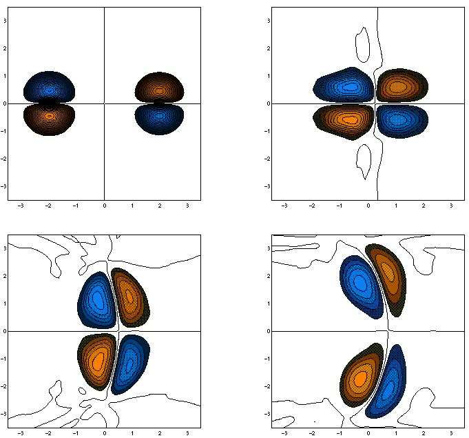
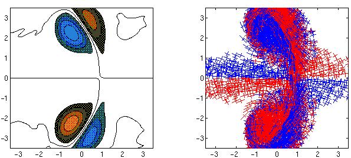

The red regions are positive vorticity. The blue are negative vorticity. Each frame is 2.0 time units apart. The fluid viscosity is 0.005. If this calculation were to run longer, the dipoles would exchange partners one more time and then the original pairs would continue on their merry way as if nothing had happened! In terms of the scientific literature, this calculation is fairly ambitious in that the Reynolds number is very high. Remarkably enough, it is not hard to perform with this method.
Here's a look at what happens to perform this calculation. In a snapshot at t=8.0, you can see the vorticity field on the left and the computational domain on the right.

Each little "X" on the right represents an elliptical Gaussian basis function. The crosses correspond to the basis function in position, aspect ratio and orientation. Red crosses have negative circulation and blue ones have positive circulation. Considering the difficulty of this calculation, there are very few basis functions used (around 3000 in fact), but each basis function requires more calculations than traditional gridded methods.
Click here to view an MPEG movie of a vortex dipole collision.
Last modified: 1 August 2000.
Louis_Rossi@uml.edu